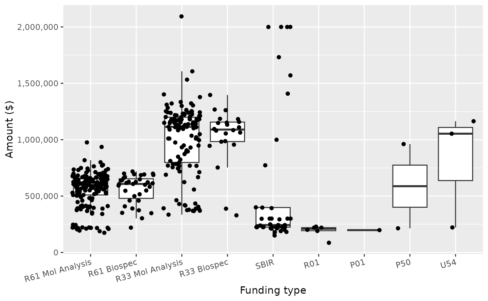
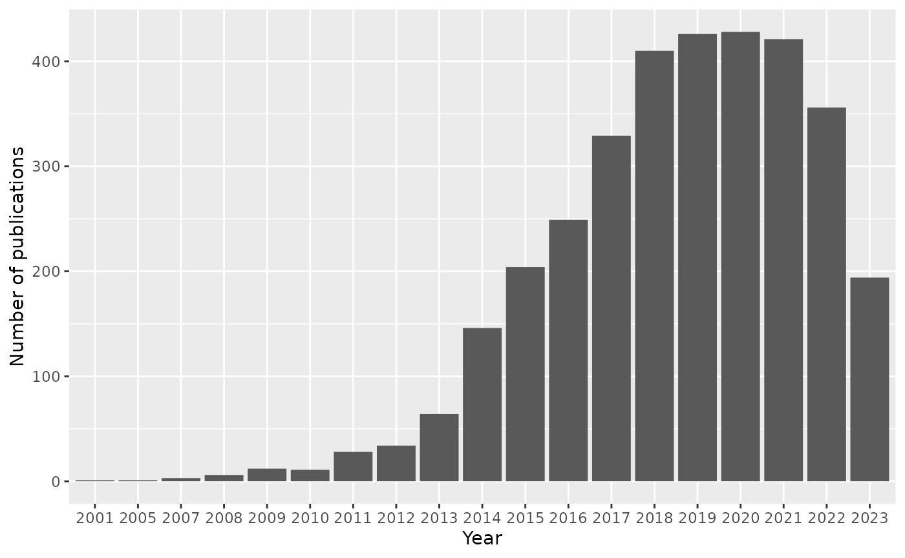
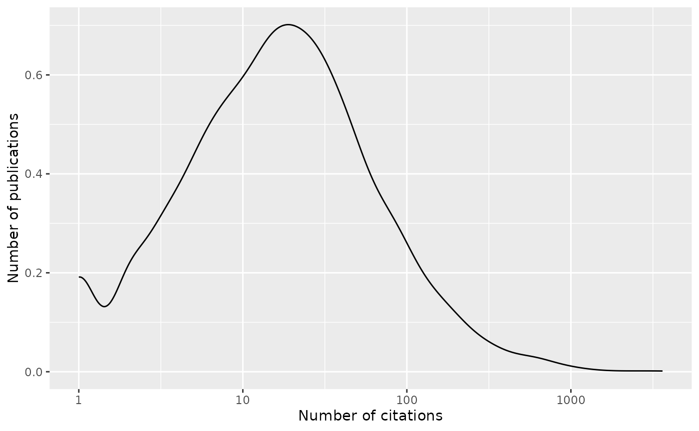

Compile: 2023-12-11
Note that this is way outside my area of expertise, so I have undoubtedly made terrible blunders.
Introduction
The ‘grantpubcite’ package can be used to query the NIH Reporter database for funded grants, and the publications associated with those grants. The citation history of publications can be discovered using iCite.
In this case study we look at the Innovative Molecular Analysis Technologies (IMAT) program aimed at the development andb integration of novel and emerging technologies in the support of cancer research, diagnosis, and treatment. We track funding opportunities from 2012 onward.
Getting started
See the Introduction to ‘grantpubcite’ article for installation, basic use, and a brief introduction to ‘tidyverse’ operations.
Load the library and other packages to be used in this case study.
This document is written in Rmarkdown; code chunks used to generate each table or figure can be shown by toggling the ‘Details’ widget.
Projects
Funding Opportunity Announcements for IMAT since 2012 are summarized as follows:
foas <- case_study_foa_imat()
foa_full_tag_count <-
foas |>
count(full_tag, name = "n_foa")## # A tibble: 11 × 2
## full_tag n_foa
## <fct> <int>
## 1 R61 Mol Analysis 12
## 2 R61 Biospec 12
## 3 R33 Mol Analysis 12
## 4 R33 Biospec 12
## 5 SBIR 2
## 6 R01 6
## 7 U01 6
## 8 P01 6
## 9 P50 6
## 10 U54 6
## 11 U2C 5Discover projects funded through these FOAs by querying NIH Reporter, and use the information returned by a the query to summarize the projects.
project_summary <- program_projects(foas)
project_foa_full_tag_count <-
project_summary |>
left_join(foas, by = "opportunity_number") |>
count(full_tag, name = "n_project")
foa_awards <-
left_join(foa_full_tag_count, project_foa_full_tag_count, by = "full_tag") |>
mutate(n_project = ifelse(is.na(n_project), 0L, n_project))There are 412 projects.
Some FOAs have not yet funded projects.
Award amounts are summarized below.
plot <-
project_summary |>
left_join(foas, by = "opportunity_number") |>
ggplot(aes(full_tag, award_amount)) +
theme(axis.text.x = element_text(angle = 15, vjust = 1, hjust=1)) +
scale_y_continuous(labels = scales::comma) +
geom_boxplot(outlier.color = NA) +
geom_jitter() +
xlab("Funding type") + ylab("Amount ($)")
Publications and citations
Publications associated with projects are discovered using NIH Reporter. Citations are from iCite.
program_publications <- program_publications(foas)
publications <-
program_publications |>
select(-c("opportunity_number", "core_project_num")) |>
distinct() |>
arrange(desc(citation_count))
publications_per_project <-
program_publications |>
count(core_project_num, name = "n_pub") |>
left_join(project_summary, by = "core_project_num") |>
select(-c("opportunity_number", "project_title", "fiscal_year")) |>
arrange(desc(n_pub))
collaboration_summary <-
program_publications |>
count(pmid, name = "n_collaborators") |>
count(n_collaborators, name = "n_publications")There are 3447 publications. One challenge with is that a large project (e.g., U54MD000538) may have been funded throughf IMAT for only a small amount of money or short period of time as a subproject. Nonetheless, publications reflect the publication of the large project, including activities not funded by IMAT.
The figure below shows publications per year…

…and the distribution of citations per publication
plot <-
publications |>
filter(citation_count > 0) |>
ggplot(aes(citation_count)) +
scale_x_log10() +
geom_density() +
xlab("Number of citations") + ylab("Number of publications")
Project-level citations are summarized by the number of publications, the total citation count, and the sum of the ‘relative citation index’, a measure provided by iCite standardizing the impact of publications by year and field of study.
Collaboration
The network below show collaboration between projects, as reflected in publications acknowledging more than one project. Hover over nodes to see project number and title. The width of edges is proportional to the square root of the number of co-publications, dashed lines indicate a single copublication; hover over edges to see the number of collaborations.
## pubs <- program_publications(foas)
## pubs |> count(pmid) # pmid 32554617 is highly collaborative
copub_data <- copublication_data(foas, exclude = "32554617")
nodes <-
copub_data |>
## exclude
tidyr::pivot_longer(dplyr::starts_with("core_project_num")) |>
distinct(id = value) |>
left_join(
project_summary |>
select(id = "core_project_num", project_title) |>
distinct(),
by = "id"
) |>
mutate(
size = 10,
title = paste0(id, ": ", .data$project_title)
) |>
arrange(id)
edges <-
copub_data |>
mutate(
from = core_project_num.x,
to = core_project_num.y,
width = 3 * sqrt(n),
smooth = FALSE,
dashes = n == 1L,
title = n
)
network <-
visNetwork(nodes, edges) |>
visLayout(randomSeed = 123) |>
visOptions(highlightNearest = TRUE)Session information
sessionInfo()
## R version 4.3.2 (2023-10-31)
## Platform: x86_64-pc-linux-gnu (64-bit)
## Running under: Ubuntu 22.04.3 LTS
##
## Matrix products: default
## BLAS: /usr/lib/x86_64-linux-gnu/openblas-pthread/libblas.so.3
## LAPACK: /usr/lib/x86_64-linux-gnu/openblas-pthread/libopenblasp-r0.3.20.so; LAPACK version 3.10.0
##
## locale:
## [1] LC_CTYPE=C.UTF-8 LC_NUMERIC=C LC_TIME=C.UTF-8
## [4] LC_COLLATE=C.UTF-8 LC_MONETARY=C.UTF-8 LC_MESSAGES=C.UTF-8
## [7] LC_PAPER=C.UTF-8 LC_NAME=C LC_ADDRESS=C
## [10] LC_TELEPHONE=C LC_MEASUREMENT=C.UTF-8 LC_IDENTIFICATION=C
##
## time zone: UTC
## tzcode source: system (glibc)
##
## attached base packages:
## [1] stats graphics grDevices utils datasets methods base
##
## other attached packages:
## [1] visNetwork_2.1.2 DT_0.31 ggplot2_3.4.4
## [4] grantpubcite_0.0.2.9020 dplyr_1.1.4
##
## loaded via a namespace (and not attached):
## [1] tidyr_1.3.0 sass_0.4.8 utf8_1.2.4 generics_0.1.3
## [5] stringi_1.8.2 hms_1.1.3 digest_0.6.33 magrittr_2.0.3
## [9] evaluate_0.23 grid_4.3.2 fastmap_1.1.1 jsonlite_1.8.8
## [13] httr_1.4.7 purrr_1.0.2 fansi_1.0.6 crosstalk_1.2.1
## [17] scales_1.3.0 textshaping_0.3.7 jquerylib_0.1.4 cli_3.6.1
## [21] crayon_1.5.2 rlang_1.1.2 ellipsis_0.3.2 bit64_4.0.5
## [25] munsell_0.5.0 withr_2.5.2 cachem_1.0.8 yaml_2.3.7
## [29] parallel_4.3.2 tools_4.3.2 tzdb_0.4.0 memoise_2.0.1
## [33] colorspace_2.1-0 curl_5.2.0 vctrs_0.6.5 rjsoncons_1.0.1
## [37] R6_2.5.1 lifecycle_1.0.4 stringr_1.5.1 bit_4.0.5
## [41] fs_1.6.3 htmlwidgets_1.6.4 vroom_1.6.5 ragg_1.2.6
## [45] pkgconfig_2.0.3 desc_1.4.3 pkgdown_2.0.7 pillar_1.9.0
## [49] bslib_0.6.1 gtable_0.3.4 glue_1.6.2 systemfonts_1.0.5
## [53] highr_0.10 xfun_0.41 tibble_3.2.1 tidyselect_1.2.0
## [57] knitr_1.45 farver_2.1.1 htmltools_0.5.7 labeling_0.4.3
## [61] rmarkdown_2.25 readr_2.1.4 compiler_4.3.2